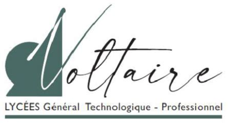
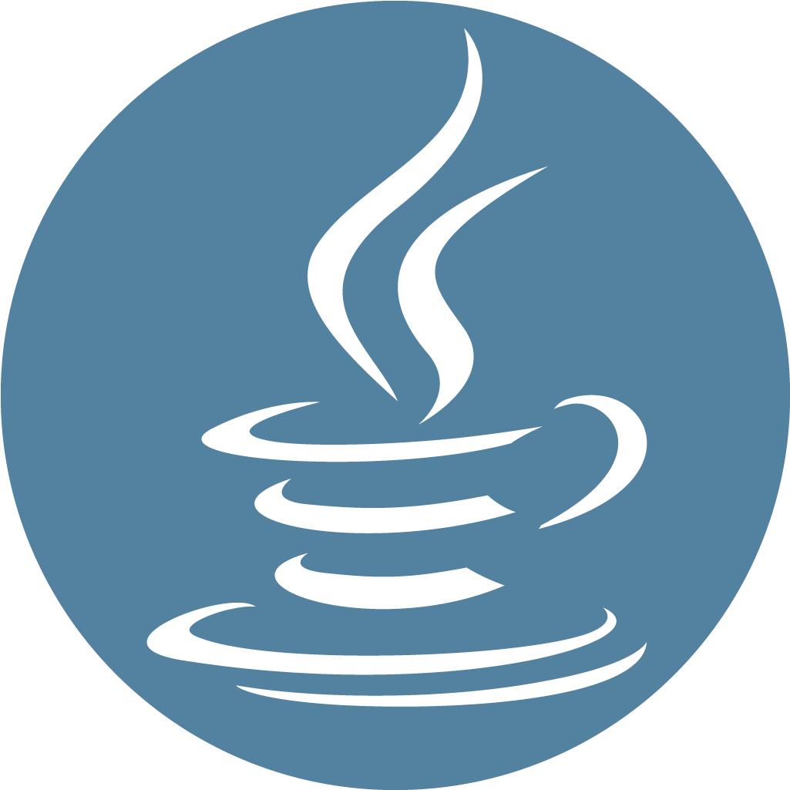
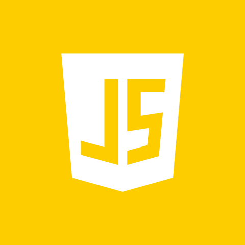
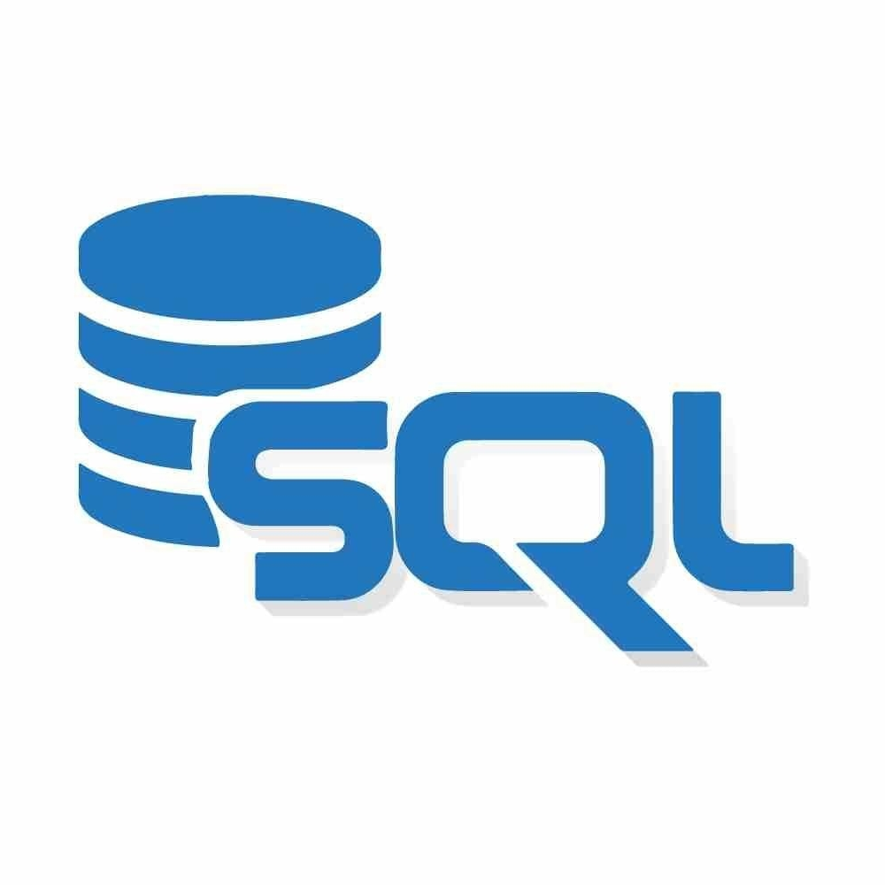
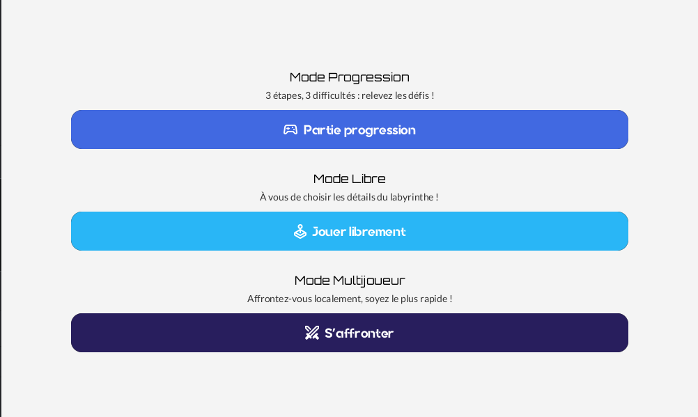
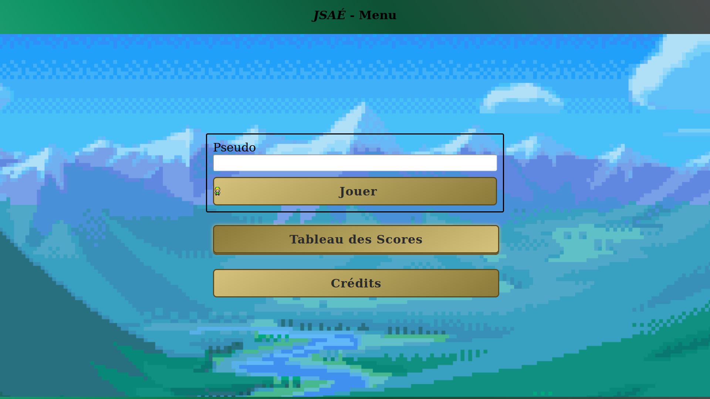
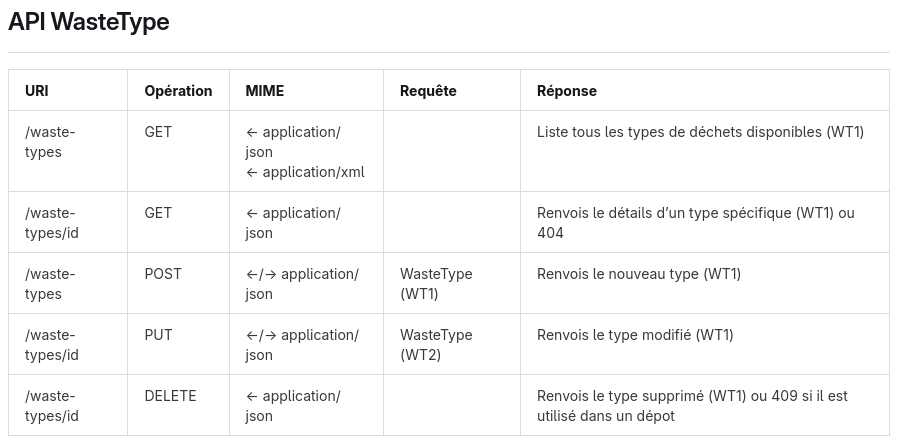

Actuellement en 3e année de BUT Informatique, je m’intéresse à la logique, à la programmation et à la compréhension des systèmes informatiques. Cette formation m’a permis d’approfondir les bases de l’informatique et de mieux comprendre le fonctionnement des outils et des concepts étudiés. Je comprends rapidement les principes abordés, même si leur mise en pratique peut parfois demander plus de temps. J’apprends surtout en pratiquant et en prenant le temps de comprendre ce que je fais.
BUT Informatique
Formation universitaire orientée vers l’informatique, couvrant les bases de la programmation, de l’algorithmique et de la compréhension des systèmes informatiques.
Baccalauréat général
Spécialités :
- Numérique et Sciences Informatiques (NSI)
- Langues, littératures et cultures étrangères et régionales (LLCER)

Compétences techniques
-
 Python
Python
-

Java -
 HTML
HTML
-
 CSS
CSS
-

JavaScript -

SQL
Savoir-être
-
Rigoureux
Je travaille avec méthode et attention afin de produire un résultat propre et soigné, cohérent et conforme aux attentes.
-
Fiable
Je m’implique dans les tâches qui me sont confiées et je fais en sorte de respecter les attentes et les délais.
-
À l’écoute
Je prends le temps de comprendre les informations transmises avant de donner mon avis ou de proposer mon aide en fonction de ce qui a été dit.
-
Respectueux
De manière générale, je fais attention à adopter une attitude respectueuse envers les personnes avec qui je travaille.

Road To The Sortie
Cette SAÉ visait à nous faire déveloper un jeu autour d'un labyrinthe dans lequel la génération de labyrinthe est très importante.
Ma contribution dans ce projet aura été de soutenir les autres membres et d'aider ceux qui en avait besoin.

JSAÉ
La JSAÉ est un projet qui avait pour but de nous faire développer un jeu shoot em' up dans un site en HTML/CSS/TimeScript
Ma contribution dans ce projet aura été de m'occuper de la structure HTML/CSS/TimeScript

TITRE
Le but de cette SAÉ était de développer une API REST pour une entreprise factice de récolte de déchets afin de nous faire pratiquer le développement de l'architecture REST.
Ma contribution dans ce projet aura été de m'occuper de créer les DTO, de toute la partie "contrôleurs" de l'architecture, les tests faits avec Bruno, ainsi que la partie documentation.